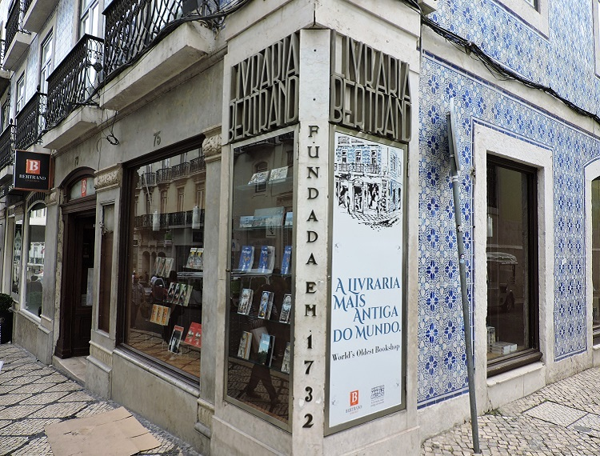
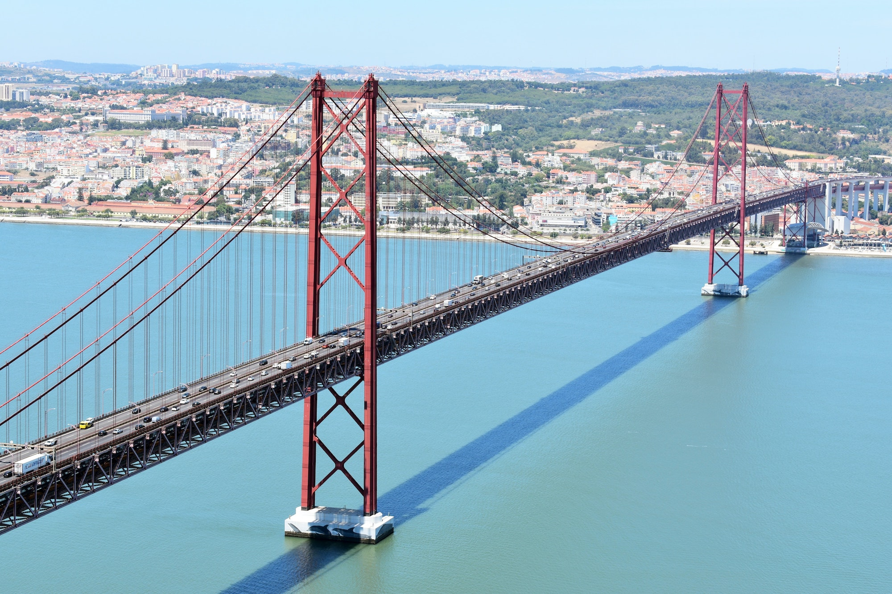
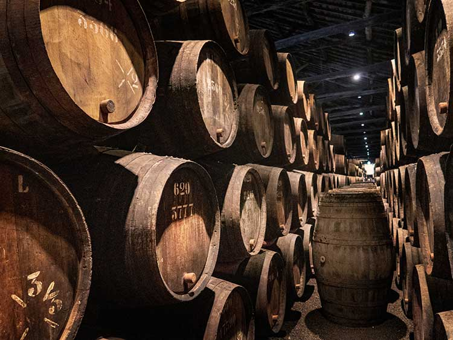

|
|
Home |
Pontos Turisticos |
Curiosidades |
A Maior Livraria Antiga do Mundo |
Universidade de Coimbra |
|  |

|
|
A Livraria Bertrand, localizada em Lisboa, é reconhecida pelo Guinness World Records como a livraria mais antiga em operação contínua. Foi fundada em 1732 e ainda é um destino popular para os amantes de livros. |
Fundada em 1290, a Universidade de Coimbra é uma das universidades mais antigas do mundo ainda em operação. Seu edifício histórico, a Biblioteca Joanina, abriga uma coleção de livros raros e antigos. |
Ponte 25 de Abril |
O Vinho do Porto |
|  |  |
|
A Ponte 25 de Abril, que liga Lisboa a Almada, é uma das pontes suspensas mais longas do mundo. Ela foi inaugurada em 1966 e é um marco icônico na paisagem de Lisboa. |
Embora seja frequentemente associado a Portugal, o vinho do Porto é, na verdade, produzido na região do Douro, no norte do país. É um vinho fortificado, envelhecido em barris de madeira, e é famoso por seu sabor único. |